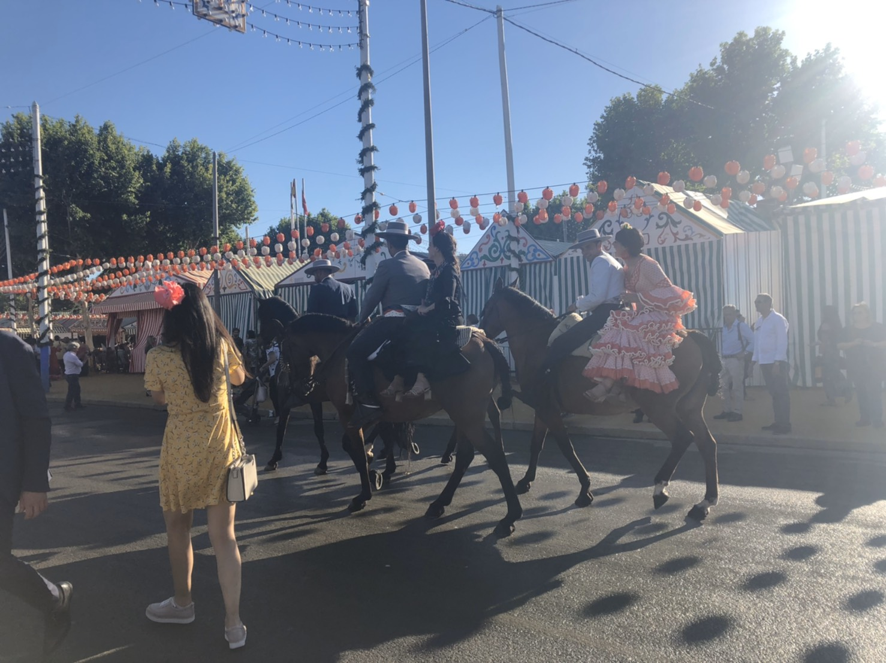
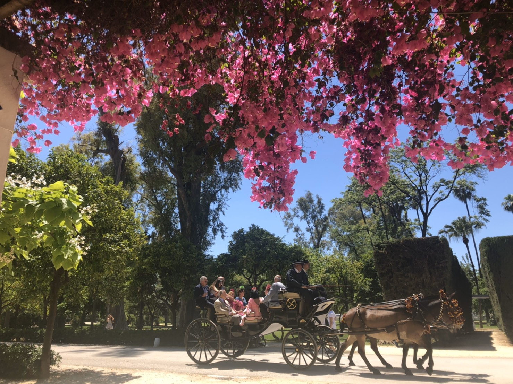
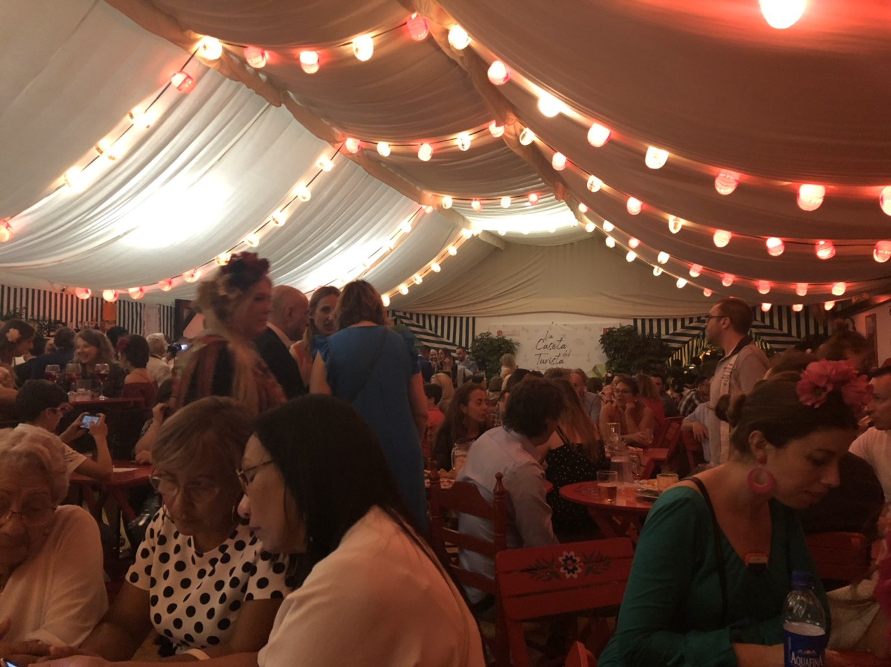

The Seville Fair (officially and in Spanish: Feria de abril de Sevilla, "Seville April Fair") is held in Andalusian capital of Seville, Spain. The fair generally begins two weeks after the Semana Santa, or Easter Holy Week.
For the duration of the fair, the fairgrounds and a vast area on the far bank of the Guadalquivir River are totally covered in rows of casetas (individual decorated marquee tents which are temporarily built on the fairground). These casetas usually belong to prominent families of Seville, groups of friends, clubs, trade associations and political parties. From around nine at night until six or seven the following morning, at first in the streets and later only within each caseta, there are crowds partying and dancing sevillanas, drinking Sherry, manzanilla or rebujito, and eating tapas. This fair also has an amusement park that comes with it and has lots of games to play along with roller coasters to ride.
 四月春會的起源可以追溯至1846年8月25日，兩位伯爵Narciso Bonaplata及José María de Ybarra提出舉辦農產牲口市集，當年9月18日塞維亞政府通過將4月18，19及20日訂為市集舉辦日，並由女王伊莎貝爾二世(Isabel II)批准1847年4月18日於Prado de San Sebastián舉行第一屆牲口市集(Feria de ganado)。市集最初為期三天，1913年政府將市集增加為四天，最後延長為六天。牲口交易期間，由於人潮眾多，後來市集不只於買賣也漸漸帶入了歌舞及飲酒等活動，慢慢地買賣活動被慶祝活動取代並流傳至今，而形成現今熱鬧歡騰的四月春會。此外，由於活動規模日益擴大，近年來活動舉辦場地已改至Los Remedios。
帳棚(casetas)是四月春會不可或缺的元素，整個春會由上千個帳篷組成，帳篷的外觀看起來雖大同小異，但內部則可由帳篷所有人自由裝飾，因此每個帳篷的內部都獨樹一幟，別有一番風味。而帳篷分為公有帳篷(casetas públicas)及私人帳篷(casetas privadas)，公有帳棚為市政府所有，規模通常較大，可供民眾自由進出體驗四月春會的熱情；私人帳棚則隸屬於家庭、公司及私人團體，須被邀請才能入內。帳篷內通常設有tablao(表演佛朗明哥的舞台，但在塞維亞四月春會則表演sevillanas)及小吧檯提供各種西班牙美食，當然還有不可或缺的含酒精飲料可以讓參與民眾不醉不歸！
